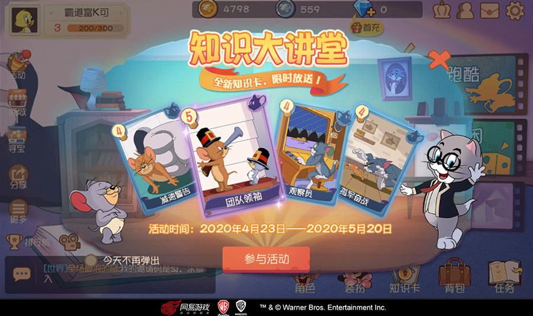
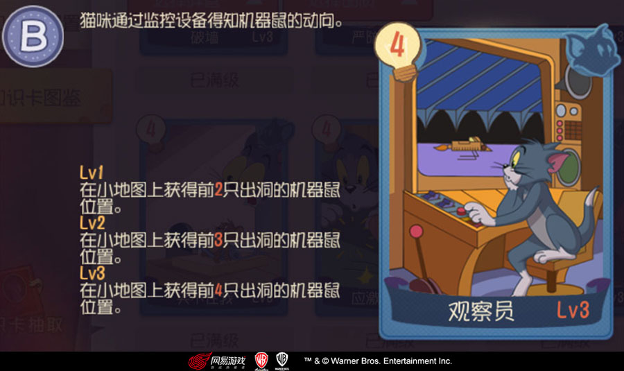
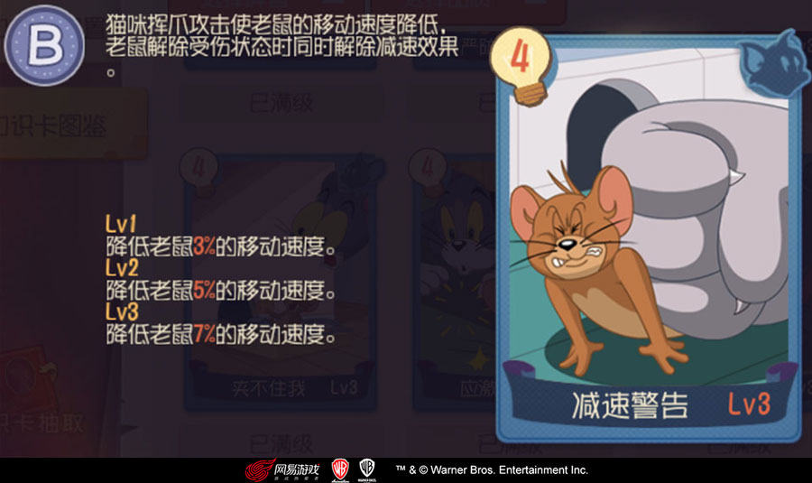
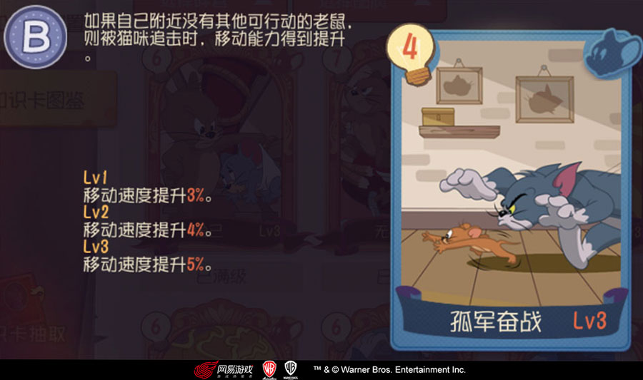
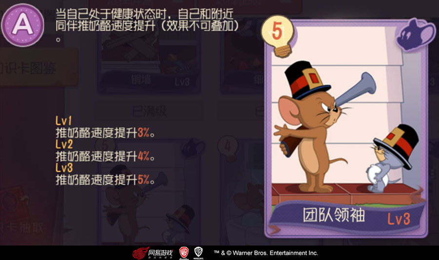

扫一扫下载游戏
观察员上线 《猫和老鼠》知识大讲堂限时开课
作者 2020-04-22追逐也要知识比拼，博学让猫鼠嬉戏更有趣！由华纳兄弟互动娱乐正版授权，网易精心研发的《猫和老鼠》手游凭借百变玩法赢得了玩家喜爱，在这里猫与鼠的竞技不仅与玩家对技能、地形熟悉度以及操作水平有关，还要受到“知识储备”的影响，海量角色知识卡的搭配组合，能够给竞技局面带来意想不到的转折！4月23日至5月20日，“知识大讲堂”活动限时开启，四张全新知识卡闪亮开课！

全新知识卡开讲啦《猫和老鼠》手游竞技离不开“斗勇”更离不开“斗智”，针对不同的关卡玩法、地图环境，玩家可以借助角色职业和知识卡组合做出自由发挥。本次活动中的“知识大讲堂”礼盒，每次开启后必定可以获得新知识卡“观察员”、“减速警告”、“孤军奋战”或“团队领袖”的整卡或碎片，累计开启8次更可必得所有新知识卡的整卡或碎片。
“知识大讲堂”礼盒可以通过【寻宝】-【知识卡获取】得到，玩家累计翻取知识卡达到一定次数即可获得对应的奖励礼包 ，包括“知识大讲堂”礼盒若干与团队领袖整卡，翻牌越多收获越大！
信息对追逐战的战略布局至关重要，“观察员”可以让猫咪通过监控设备得知机器鼠的动向，杜绝信息干扰，做出更为准确的判断。

观察员老鼠灵活快捷的移动是最令猫咪头疼的，不过只要掌握了“减速警告”，就可以通过挥爪攻击使老鼠的移动速度降低，需要注意的时老鼠解除受伤状态时同时会解除减速效果，趁胜追击才是王道。

减速警告压力也会转化为动力，当老鼠落单时，只要学会“孤军奋战”，就可以在被猫咪追击时获得移动能力的提升。

孤军奋战优秀的首领不仅能够判断局势担当指挥职责，更要擅于鼓舞士气，学握“团队领袖”知识的老鼠，可以在自己保持健康状态时为附近的同伴加油打气，提升推奶酪的速度。

团队领袖此前，《猫和老鼠》手游推出的“装饰树大作战”休闲玩法深受广大玩家喜爱，遗憾的是猫方角色缺席。本次更新后，“装饰树大作战”进行了重磅改版，让各位猫咪也能够参与进来同喜同乐！

在新玩法中，双方场上阵容均为1猫3鼠，开启真正意义的猫鼠合作对抗赛。其中猫方仍然可将敌方老鼠抓起并绑在火箭上放飞，不过被放飞的老鼠将进入若干秒冷却期，冷却期过后还可以重新回到游戏中继续参战！

除了限时的“知识大讲堂”活动之外，玩家还可以通过《猫和老鼠》手游的知识卡商店、限定知识卡商店获得更多不同类型的知识卡，全面学习让自己在竞技场上拥有更多主动！
华纳兄弟互动娱乐隶属于华纳兄弟家庭娱乐集团，是全球顶级的多平台娱乐内容开发、发行、授权和分销商，业务覆盖自研及第三方研发的主机、掌机、手机及电脑端游戏。
《猫和老鼠》是由华纳兄弟互动娱乐正版IP授权，网易游戏诚意打造的欢乐互动手游。游戏完美还原儿时动画经典，带你回到欢乐满满的童年时光。你既可以扮演淘气的杰瑞去夺取奶酪，又能够变身为狡黠的汤姆与小老鼠们嬉戏打闹。追逐场景还原动画经典，缤纷道具发挥出奇妙效果，更有原汁原味的角色供你选择！快来加入猫和老鼠的世界，收获属于你的欢乐！
游戏官网：http://tom.163.com/
官方微博：猫和老鼠官方手游
官方微信：猫和老鼠官方手游
互动交流1群：609103373
互动交流2群：728428642
互动交流3群：777415900
互动交流4群：735308476
互动交流5群：828687377
互动交流6群：806239481
互动交流7群：739131659
互动交流8群：259985866
互动交流9群：678297800
互动交流10群：598384987
互动交流11群：217989458
互动交流12群：757589281
互动交流13群：13470775
互动交流14群：729963301


公司简介-客户服务-网易集团隐私政策及儿童个人信息保护规则-网易游戏-联系我们-商务合作-加入我们
网易公司版权所有 ©1997-2020 点击查看家长关爱平台>